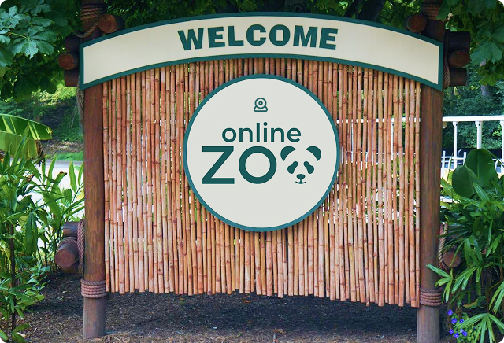
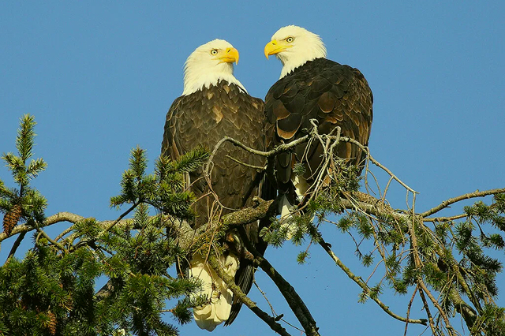
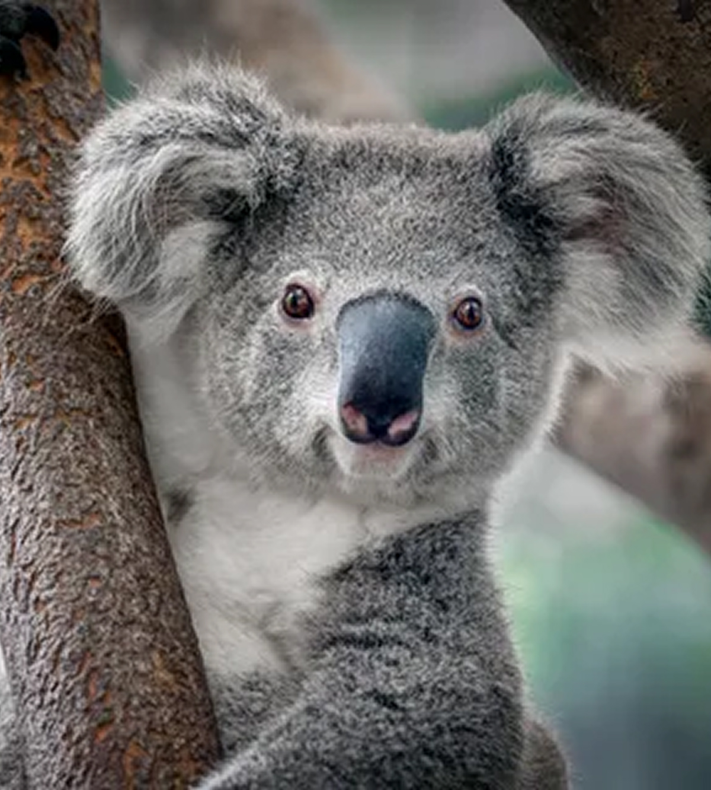
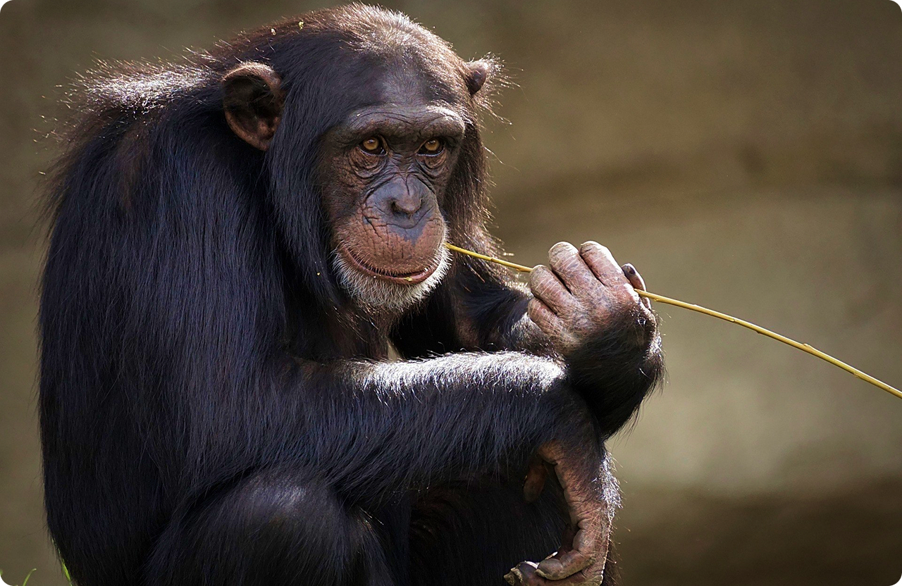
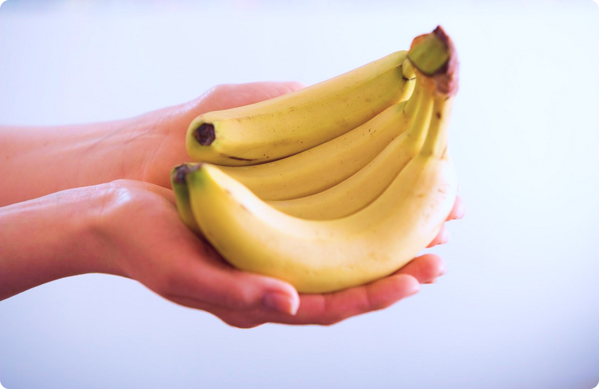
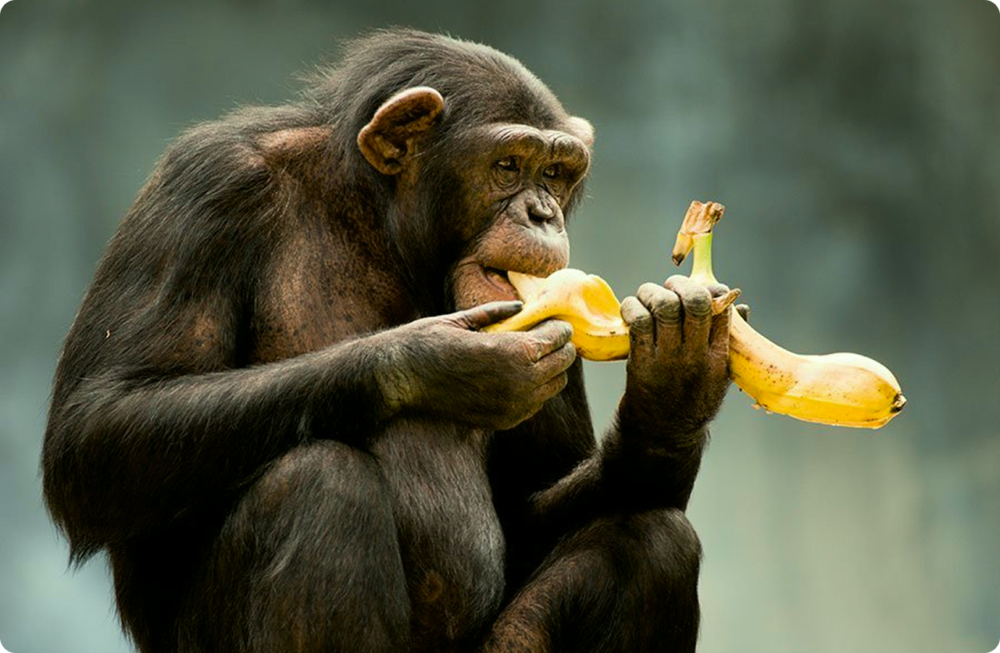

Watch your favorite animal online
Explore the exciting and mysterious world of wild animals in a natural setting without leaving your home.

Welcome to the Online Zoo!
On our website, using live webcams, fans of all ages can observe various animals. Among them, are Giant pandas, eagles, alligators, forest gorillas, African lions, and others. It is the whole natural world in real-time in front of our cameras. We hope you will enjoy watching closely and explore animals’ behavior and habitats! Note: animals are not always on view on cameras, so please check back if you don't see anything.

How we work
Online Zoo is a nonprofit committed to inspiring awareness and preservation of nature and wild animals in our zoo and worldwide. Every day, our experts work to safeguard the health and wellness of the animals. To continue these efforts, we need your help. We're so grateful to our numerous supporters. All donations, large and small, go a long way to the conservation efforts of our pets.
Your donation makes a difference!
The Online Zoo's animal webcams are some of the most famous on the internet. Tune in to watch your favourite animals — live, 24/7!
Quick Donate
meet some our Pets
Do you have a special place in your heart for animals? Who are your favorites? Perhaps you'd like to donate to special ones or all our pets? We think it's important for you to choose how your donation is used.

Australian Koala
The elevated walkways bring you to eye level with the koalas as they perch in their forest.
Africal Lion
Lions roam the savannas and grasslands of Africa, hunting and raising cubs in the pride.
Australian Koala
The elevated walkways bring you to eye level with the koalas as they perch in their forest.
Australian Koala
The elevated walkways bring you to eye level with the koalas as they perch in their forest.
Australian Koala
The elevated walkways bring you to eye level with the koalas as they perch in their forest.
Australian Koala
The elevated walkways bring you to eye level with the koalas as they perch in their forest.
Australian Koala
The elevated walkways bring you to eye level with the koalas as they perch in their forest.
Australian Koala
The elevated walkways bring you to eye level with the koalas as they perch in their forest.
Pay and feed

Your donation has an impact
Providing our animals with high-quality nutritious diets is just one element of animal care at our Zoo. We do all the best so that our animals can eat food similar to what they might find in their natural habitats while making sure they get the right mix of nutrients, proteins, and vitamins to be happy and healthy. Please help us provide nutritious food for our animals by donating. The generosity of people like you can help us make sure that our animals enjoy good food that keeps them in great condition.

Make a donation
You can donate through your credit card without any fees. It is easy and safe. We do not keep donors' personal information on an online network. Choose an amount to give and the pet's name if needed. One of the most effective ways you can give is by making regular donations.

Bring your food charity — straight to your favorites pets.
After your donation, the animal receives its favorite foods. You can support your favorite animals or any animal you care about and make a real personal impact. Never doubt that your donation can make a difference even if it is small.
what our users think
We are continuously striving to improve the experiences of our future guests. Below you can leave your own feedback, or simply view feedback from past clients.
New Jersey, November 2020
I am writing to thank you for your mission is to bring people closer to nature! Like myself, children were very impressed by the opportunity to explore the life of incredible animals in real-time.